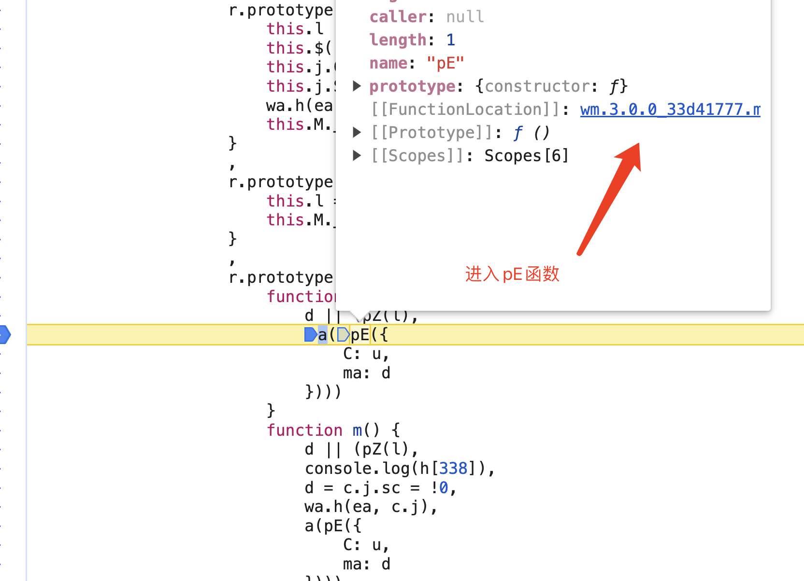
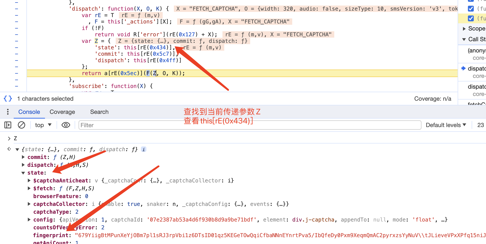
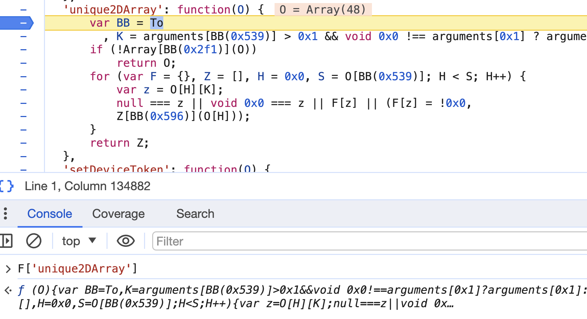
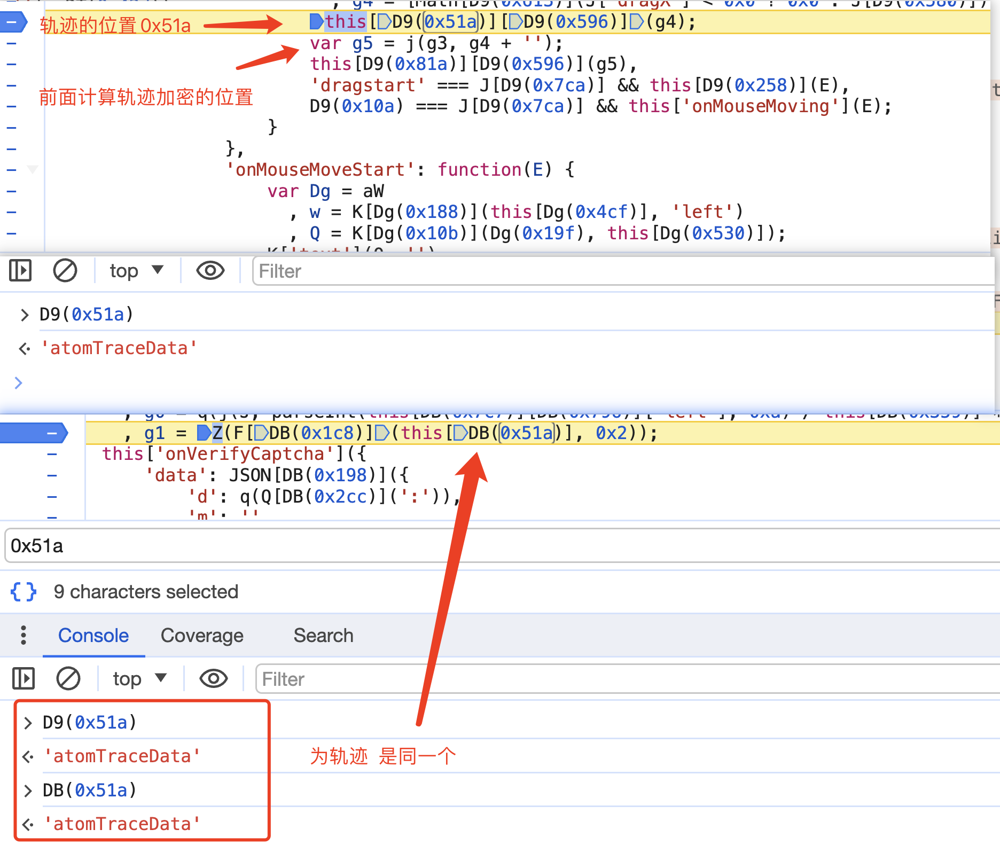

三十、网易易盾
一、前言分析
https://dun.163.com/trial/jigsaw
1、URL请求顺序
- https://dun.163.com/trial/jigsaw 加载首页
- https://ac.dun.163.com/v3/b
- https://ac.dun.163.com/v3/d
- https://c.dun.163.com/api/v2/getconf 返回下面请求所需要的参数（dt、token等）
- https://c.dun.163.com/api/v3/get 返回当前验证码图片
- https://c.dun.163.com/api/v3/check 滑动验证
2、每个请求对应参数
(1) https://ac.dun.163.com/v3/b
- 携带数据
javascript
{
"d": 加密参数,
"v": "33d41777",
"cb": "__wmjsonp_b698549"
}
- 请求头
javascript
Request URL: https://ac.dun.163.com/v3/b
Request Method: POST
- 响应结果
当前结果后面用不到
javascript
__wmjsonp_c9109e0([200,1712716036847,"++EpHZyivcFBQUQRVEPA+aEitnWfyeUZ"])
(2) https://ac.dun.163.com/v3/d
- 携带数据
javascript
{
d: 加密参数
v: 33d41777
cb: __wmjsonp_2f29b02
}
- 请求头
javascript
Request URL: https://ac.dun.163.com/v3/d
Request Method: POST
- 响应结果
当前结果后面用不到
javascript
__wmjsonp_aa0dd6f([
200,
1712716036806,
"++EpHZyivcFBQUQRVEPA+aEitnWfyeUZ",
"D5Jf7cFvq9RFAVRRFQaVuLBm4iCK3PVI",
null,
"NBtgnXKndXyY4S+eme2OrG59TNwdiqsKQuG1fE+GnchCg8xBUoupVv8pCAnuBx4W1tGQSdgcXhpLWlNGyQLeY+ilePUP4OPQRcxhsJVb8DMjGnXws5QVOtDvOvCCBZb4RnQ="
])
(3) https://c.dun.163.com/api/v2/getconf
- 请求参数
javascript
{
referer: https://dun.163.com/trial/jigsaw
zoneId:
id: 07e2387ab53a4d6f930b8d9a9be71bdf # 固定值
ipv6: false
runEnv: 10
iv: 4
type: 2
loadVersion: 2.4.0
callback: __JSONP_eom26dc_0
}
-
没有需要逆向的
-
请求头
javascript
Request URL: https://c.dun.163.com/api/v2/getconf?referer=https%3A%2F%2Fdun.163.com%2Ftrial%2Fjigsaw&zoneId=&id=07e2387ab53a4d6f930b8d9a9be71bdf&ipv6=false&runEnv=10&iv=4&type=2&loadVersion=2.4.0&callback=__JSONP_eom26dc_0
Request Method: GET
- 响应结果
返回的数据多个参数用于下一个请求所携带
javascript
__JSONP_eom26dc_0({
"data": {
"dt": "Ze+/O/RGrV1AElRVVQLAqaUm9ySPe66n",
"ac": {
"enable": 1,
"bid": "07e2387ab53a4d6f930b8d9a9be71bdf",
"pn": "YD20160637306799",
"token": "9ca17ae2e6fecda16ae2e6eeb5cb528ab69db8ea65bcaeaf9ad05b9c94a3a3c434898987d2b25ef4b2a983bb2af0feacc3b92ae2f4ee95a132e29aa3b1cd72abae8cd1d44eb0b7bb82f55bb08fa3afd437fffeb3"
},
"imageServer": ["necaptcha.nosdn.127.net", "necaptcha1.nosdn.127.net"],
"zoneId": "CN31",
"resources": ["/2.27.0/core-optimi.a3391c.v2.27.0.min.js"],
"apiServer": ["c.dun.163.com", "c.dun.163yun.com"],
"theme": "light",
"audio": true,
"customStyles": true,
"smart": false,
"staticServers": ["cstaticdun.126.net", "cstaticdun1.126.net"]
},
"error": 0,
"msg": "ok"
});
(4) https://c.dun.163.com/api/v3/get
- 请求参数
javascript
referer: https://dun.163.com/trial/jigsaw
zoneId: CN31
dt: +d46R9cod/pFExRFRQOAudR1RIARdYH2
acToken: 9ca17ae2e6ffcda170e2e6eeb7ed52b49dbd83b65b91b48ab3d55e879b8a83d57a8b8affb6e25b8694bdb2ef2af0feaec3b92a899fc0bbd021b2e9c083e25a829b9eb2c54fa68fe185c86d8c9898d5ec52a799ee9e
id: 07e2387ab53a4d6f930b8d9a9be71bdf
fp: 05aw7/a447/OOW/KYZhTf+UaC6EhQY+/5UUZQ/ck4Cycm3i5B426XQvvZN6iZD6xOA+TQ857lyC\zM0PIAndnGEdGRKKhB0OHfr7YusWtSgYa9+T+5g0Jv/yj84hITJ/LhDlKrJYNwLAVixZ0ZTu5GNoA\dRzZnkNTXJBGhY0jueXehO:1711614684226
https: true
type: 2
version: 2.26.1
dpr: 2
dev: 1
cb: aQ+5A1adrUfsVhWqxjeTnY2LiRO/EJQCKnvKdym6Elcxjz4YGaKbRhuMN4ukKUVh1xgy92YM8QrBKiCryBjjNfukvoE7
ipv6: false
runEnv: 10
group:
scene:
lang: zh-CN
sdkVersion: undefined
iv: 3
width: 320
audio: false
sizeType: 10
smsVersion: v3
token:
callback: __JSONP_37iwidr_1
- 逆向参数
dt： 上一个请求响应的dt值
acToken：需要逆向
id： 上一个请求响应的bid值
cb：逆向
fp： 可以为空undefined
- 请求头
javascript
Request URL: https://c.dun.163.com/api/v3/get?referer=https%3A%2F%2Fdun.163.com%2Ftrial%2Fjigsaw&zoneId=CN31&dt=Ze%2B%2FO%2FRGrV1AElRVVQLAqaUm9ySPe66n&acToken=9ca17ae2e6ffcda170e2e6eea5b842a6e9ada7f57bfb8e8aa2d55a929a9f82d57f909ea3d5ec4989eda0b7cc2af0feaec3b92a8b94baa2d03fed9e869ac94a828b9bb3c85ba78abb82d563f7b798b1fb21babeee9e&id=07e2387ab53a4d6f930b8d9a9be71bdf&fp=w9L%2FQH3wVVhrk35VIVsz24L7tbXO5%2F2JvAT9NMOyB%2FusJttIyls4mg7BgLwE1dzhpVUPvhIT2KuHGaZT8QSkf0VWp8T9QaVQuJCHcwgzjgmmyLHN62hfJVQh9rf6OjklxOLGG%2B3aUpqLX29VeCpofDqVeKAqrRujTQn2rvu2nmQlYx1b%3A1712716525125&https=true&type=2&version=2.27.0&dpr=2&dev=1&cb=Chbwi3kazuHSOkSuIZJ5P.8%2FAYKt9GJFGNeQXmxQ5r.462S4aapgRkDPsbDXEe6PCSHqL05YRi4.xIXtukprjSE3ZtV7&ipv6=false&runEnv=10&group=&scene=&lang=zh-CN&sdkVersion=undefined&iv=4&width=320&audio=false&sizeType=10&smsVersion=v3&token=&callback=__JSONP_omvo7l4_0
Request Method: GET
- 响应结果
返回当前验证码图片
javascript
__JSONP_xi83x4b_2({
"data": {
"bg": ["https://necaptcha.nosdn.127.net/a265b421c68e4478962e380efe76df47@2x.jpg", "https://necaptcha1.nosdn.127.net/a265b421c68e4478962e380efe76df47@2x.jpg"],
"front": ["https://necaptcha.nosdn.127.net/6653fdf16a9d4e498932caf3ac46279c@2x.png", "https://necaptcha1.nosdn.127.net/6653fdf16a9d4e498932caf3ac46279c@2x.png"],
"token": "4d8cce7c78dd413899e876dee49483b4",
"type": 2,
"zoneId": "CN31"
},
"error": 0,
"msg": "ok"
});
滑动失败会重新执行
(5) https://c.dun.163.com/api/v3/get
- 请求参数
javascript
referer: https://dun.163.com/trial/jigsaw
zoneId: CN31
dt: vwjizRDzBbBEAgUFEULE9/EjUswZUEOM
id: 07e2387ab53a4d6f930b8d9a9be71bdf
token: 上一个URL响应的
acToken: undefined
data: {"d":"EpJz826dJcFxSBXYQ+MlMprgdEwJ3w1NyODt2xa91fIwf.uEVDkrwaxaAyVZTjrS+OEGmU/Gx/qJTdgbTjY4oMUf9dC0PCEdk8FljcUImur+0CWNklyUppxRdgg/ph4UFX.nOgRhc+mw9dznLPkZPcfYTg3ycS5J6jQC.VMHK8JHH49j.LsaMwLI6QhhFQPyyHfuTEnvvKnCztmdDtE9xlvO2o9gGyy9GhynsKgAnpbhiSlWpNC1+csPZZfiyn4vr.ysHM61CBMoJ0F8qn3KY.HMhdcef1uxqxfrnEM2FJUR4s58Drgtmsyeqwf35tx6MDqfAQJf/LiET8fmHILXUSHi.09NR0/WJJkSk4UEQcO8V/oZcUY+ZGs22nF/Fi2XP8sfvXCo1T5GZzEHPHcNH5x1y2.l+0m4phVNNawMRqgvVfF8ZFr4P98TCp1zjwmDQds5YqkeLXHeDckLx+.xOABmfrDfPVPstbneuA1d006/JfhF1eU+/AXTkK33pZgRWDYmeM77","m":"","p":"XiYO1mxjZ046xExmw8RqWt.buhT1Gn6GKtFdwg1ITCIuyHpt48A/x0DG948YJMKfYH8pkwFBxwnKgWqzT3wb3GLHuXY7","f":"/n3pnkVuxawgPyzhiq+HQt2fkKrlZ3/adyaLMn/e/FRlMF4RryBAxShnNZ9X9SHm3WaHrrN94nFEY5AgEzDVG8CpLWIm.c86NGzPwerWhIQk4hNKlEtPihAmNtnrDanKR25faUwODNyEvm2QEE/sxuSVu6yzIisnyNUalG.xKzbHEPLVeomvCpGkNRzrsGCdPnqJ9sZ9E2ubm5ItlKsspxZaFXYMZfJAAfriO..42GnV3GhQ6eqcpmgN3lhr8aq2lesZZxsI+/r+QNKEdjrugQf4I0L//ENSvD6/UPoQq5Gl2cAimfoWH6bH4OgYzjI+y/s4bosDqgyqfh8Kj38+/KloK8viF9FAc+uLygzuQCIXMCfjD/8BinowmmIu.4F0cE3ZfvtDXZWthPbu3GmUJmRolq4eEwxVDZPIQuY3Sulsw+jd","ext":"5RjhyovDbfwbZ/zX5trvEvx0DFJ6/UDrHClub.hhgTsvh1Uzgn.nS/3qZdWJjEpkZsUAXfYJD2JrHFJ0AbxhHbDJFdY7"}
width: 320
type: 2
version: 2.25.0
cb: ckibuKyYZEaGG.fzVzDYaN..+tLMJUPcE4juv8CAD/FxajmYD65t0PZ4lzaTpKVmqpCGhUI/SGUG64DWpqu5WmN10TE7
extraData:
bf: 0
runEnv: 10
sdkVersion: undefined
iv: 3
callback: __JSONP_m8c7mu7_2
- 逆向参数
dt: 第三个请求返回的dt
id：固定的
token： 第三个请求返回的token
data：需要逆向（由轨迹和滑动距离加密组成）
cb： 逆向
- 请求头
javascript
Request URL: https://c.dun.163.com/api/v3/check?referer=https%3A%2F%2Fdun.163.com%2Ftrial%2Fjigsaw&zoneId=CN31&dt=Ze%2B%2FO%2FRGrV1AElRVVQLAqaUm9ySPe66n&id=07e2387ab53a4d6f930b8d9a9be71bdf&token=ea93d2443e9d48febc75c28933fdef09&acToken=undefined&data=%7B%22d%22%3A%226Pt9KmwAN3nVbBF8ZyhIK8zqMSGYiDSH4Ihz4Sy0C1zweGvcKk.WFDPA%2F%2B%2BAmAiMTQT02GAVa4EOHcPcAfCy%2BiVnkNJjO4DJFJI.E%2FsH5ba%2BP0oSKOrc3sGq0dEH9JAS%2FN%2B9%2Fz5wo.iK6gXU6tvUr0EyghuN.3OAgzYTYTj8E4j2wWq0uO2ElVNFV%2BoU2Woa.OFF%2BdJERlO5DYwMGesMJEUgdT%2Bdnd9iWeMLxnr5pejil9GL5jsMH%2FSAA4AXxHvi8oormNA8Fk2UuvDqrIFNk6ha4tCrBbjH%2BeJGQg2apN5FPr1DqjK2z6XnCGpX.fUTcL01GAIa5TJ3s3RPXFqxB3SnpB4.%2BKe1C1TZeeE80mUJ6S6YIEu%2BgG0BN%2BRP%2Fo%2BHM1%2F9zmJ6DVrTHKyv%2BrJ3MIxmd4kW1Vb49QDd36ztrOV5CFYzX9b5rG0HJEya%2FQZaetAcUUq8nLQK2NQbFewoZBPnOTs%2BbtrR%2BlGjIQb0R5dTHKso5lQUn%2FFmIsl4skc1pvzSc%2FVgPo%2FtIaxSqnlFnv%2Bla3rTF.Vku%2FNh%2Byy0CVChPuVc1YC0M04ohRiWz9FTL9HfiitncR2clN6sGWKL3Oz34vRTqmLMhAnA5EMoVEL8KDFCrtcVr44XZlMH2u6LHY1AXAsQiylVp%2B9G3d991QoutLQx4fgvvMoP95AeaZlbMc6p6O2l4M94tpyTE1lpSa4nx1Z0yQizrnL4x3%2F%2F.8Q%2FFKM4Bwlw3%2FB82IXyiUY0CIRRAjke88mb%2FXrsIkOECmog36ZiN%2Fjspxizhf1RPxOR%2BY5Vjd1UCSQgohxKXT8ncZOUFFjKH5RFObw%2FAi82Snfho5s%2FYG8KEZaj%2BnLla5z%2FhjN0a2QE%2BJXPT3nVcRyQxLjkNQOktmGFF.MjpQpVpDBpfqlfyphYNWh%2FiGt3xC3N6%2Blowg6xlkur4ydvg0uf9V1e%22%2C%22m%22%3A%22%22%2C%22p%22%3A%22.b4Xst6NfXQozNcANX1tmWZezuIIxz6jUJUW.ECz6tRqH0xcAx6eG%2FejA%2BVjz242RUi%2FIst.gUKnIcmcgcPcOmW6VEI7%22%2C%22f%22%3A%22Iy4GwvvDZp.ZdpAqoBv2nXekUG%2FoyPRIKVzQnfSpaST.a6F0re.azZR1aXDxiO4X2YvXDGe3gUvUWvdtxuO0Tauyf0rPsnB1dFiCNaOlBl9jQhAKmIQu8kHRyB5wn%2Fmf%2FTLVVHQEJtGP3P%2BHv4g3b8.c3EMScsiB%2FMViTAkK6SGTRCIMjTAPeL4lANIegK1uFxlfZjyTzfRRvdxJmm%2BPkpaPWjh%2FuQx6qQKjX6Hqj3uVyDHhjuyJW%2B%2FHE08O86vNmCAHNrDe5qr4uooqvJ4FS1RHi%2FC.Wo.pxl%2F1roHpO1TADmqIQdUPqXEilvd5h%2BArpfYcXr5N3mGiwnIkrqmTZPlmRhsai6iWSSVktkAEX2R9h%2B%2B98AuI489pxH3bxeDcke9q6k%2B8NXlE4iWzOg%2FT.jSPJPUkXPzzGqRbBAJgOQshknk4q2V5zPZSCDpXHMVVWXFgxugp2K0OwqGvZNv%2BzDu5DFxqLZORa%2F8c.rDLGNpt.09PpqLgbm2s3TTmZIDwoJT%2BsM77%22%2C%22ext%22%3A%22tbYifjNopoPCwp5CdZecn%2BkGgztLx30q3gqCxBrFUasdHaX6OqWrubgxfhIHzao3UHz4IPcSzjzgTpQC23DCe6vpybs7%22%7D&width=320&type=2&version=2.27.0&cb=BOSB6gMqVRLbSoWni0E6xh4SKtblxZOIFMcRUg6ynjWFqmO5i0K42yCNQy5bS1gW%2B3DZNs%2BuKsl1rOGHTeFv2%2FjUsEX7&extraData=&bf=0&runEnv=10&sdkVersion=undefined&iv=4&callback=__JSONP_uoycyxc_1
Request Method: GET
- 响应结果
验证失败result为false、成功为true
如果显示参数验证错误，则当前参数有逆向失败的，需要重新逆向对比一下
javascript
__JSONP_uoycyxc_1({
"data": {
"result": false,
"zoneId": "CN31",
"token": "ea93d2443e9d48febc75c28933fdef09",
"validate": ""
},
"error": 0,
"msg": "ok"
});
- 滑动验证失败
重新请求3的地址 返回新的验证码图片
二、逆向d 和b请求是同一个建议看下面的b
1、URL
https://ac.dun.163.com/v3/d
2、 请求参数
d: SKL5Artg.gDRIjp9d3N.KS7wV/KaytkbioYeGmq+fzIYDeDe+2ClX2CzFdkGt45ByCDC19c3AkRN/ggbArZ/rZhMs3KmU5Bi6wLSgw5VGP9ZiunBrNWmDJJyfny9I5W3R1jQXyYgygwyWLLm27VzR5bL/hqF4o2NKNC7ruNuWjilyUMaUbSHjpLyvKnsq/Oq4o5d4kuHXs6Jq7npD2akVcTbVFbwtL0EVasDwbF6reJz+rJ156vvAow0lWVOE/AvfSiLQGbfwkg3PECGJtgepZiacdpBa6dJZwD.dKh4qYsAdgrlQMt4.pGaSGFFW2./ySeO0/ZJFEMMyMbBmpKJf++/sN5mCEeFHlbLO/ggHNE95DbQLQnMpaubpWomIUK1yj9t3vdSMpsviTmNUKrvXHhKyGnlatiziYVk3KFZRkkiOrOI2qcsk2DMCcw725Q5YKqv3ppnW7Uo/CVByvb5H91AErHAnQF9MJE8p+Cvem3qUhBGsY8CZMriMgDC5w.cgU/c/8opIQVUgppCUKsycWt6oU2H5SWfZ8pHajqUcNGomF1aJagDG95Hy9LVvfjYQpQU2qj5XAO7y27V2vwBnEkO5N.pea9SesFHftz8L+85X6AHadu9jd/9RVZJPPzzSYvJojZsKsgpKe4X+fRNWsZfdd67f4CVu6k7AEXOITVKpFoaim.mS8wGdhr21B76sLarW.5sMYZHOU5J.V.l29zXX+Ju3OvwBfcoeDG7+zPiQTFuPF4RRjlgKHV6MXlU3XYSWviEXZkeNpGy+k+wTTTSdk9LApo6FnAgkdRUgO6mmO1DQCouaI3ZArEb7AeS26zEEtE6.Bzj00Npa161gVwbi7V0pFI5F1srNE3Fsv3cdbgpPRM8/Z0lc+q0PR7JR0PRoksKfaG4CN2h08zSY5iDhb8Czv6slRlgFEXPTjDTjn4t
v: 33d41777
cb: __wmjsonp_202808e
3、逆向参数d说明
说明：
由于当前网易易盾每次刷新都会重新请求js ，特别是对于参数d，每次添加完断点以后 都会重新求情一遍js 这样就没办法在继续调试，之前的断点也都无法再继续使用，所以我们需要使用Charles进行本地js文件替换，将总是重新请求的js文件https://cstaticdun.126.net/wm.3.0.0_33d41777.min.js?v=28524019 中的内容保存到本地，然后进行替换，这样可以在想要调试的位置添加debugger断点来不断调试，最终找到加密的参数位置
4、 Charles本地替换配置
- 选勾选 去除缓存
- 先根据当前js域名进行过滤 找到这个URL https://cstaticdun.126.net
- 将wm.3.0.0_33d41777.min.js得内容保存到本地
- 选择Ma Local
- 选择本地保存的js文件
-
在浏览器中死刷新一下既可
-
在network中查看是否替换成功

5、 在浏览器中进行调试
(1)、给当前带有d参数的URL添加断点捕获
- URL
https://ac.dun.163.com/v3/d

(2)、重新刷新浏览器 断点进行拦截
(3)、调用栈查找
顺着当前断点不断向上查找，认为是生成或者是可以调试的位置，在本地当前代码位置添加上debugger;既可，重新刷新浏览器，那么当前的js就会出现你添加的debugger
此刻可能会有很多请求都经过你给的debugger断点，那么就需要根据当前的断点上的参数进行判断，是否为d请求的参数，其中只有b参数请求可能会混乱d参数，因为值不好区分
- 查找
- 当前截图单纯演示添加debugger后的调试(可以略过)
- 打印参数a
- 找到当前加密的位置
r = RE(iE, Z[678], void 0)(a.concat(r, t))
- 在浏览器中进行对比-成功找到
- 在本地js代码中搜索当前加密代码，添加debugger
- 如果重新刷新不起作用
将application中的缓存数据全部清除后重新刷新
- debugger拦截

- 当前生成数组的f()函数 和参数b(https://ac.dun.163.com/v3/b)中的f是同一个f函数
三、逆向v3/get
1、url
https://c.dun.163.com/api/v3/get
2、逆向参数参数
- cb
- acToken
- fp 可以为undefined
其它参数
- token: https://c.dun.163.com/api/v3/check响应返回的
referer: https://dun.163.com/trial/jigsaw
zoneId: CN31
acToken: 9ca17ae2e6ffcda170e2e6eed8b150a6f0f897ef7db8b08aa6d15a868b8a83d47f82bcac85dc668fb783b2ca2af0feaec3b92a8db0a894e44787b7e5a8b75e829e9aa2d85a949bbbb2d947ed8b8ba6d94b8691ee9e
id: 07e2387ab53a4d6f930b8d9a9be71bdf
fp: w3c9dXEIB+kt15BeVA2GmhaPfcVYPW52yz4AWjspw5ezwEWjfvpBUvoG\5vVxBkvRqMG2EKdEc28SdAxfkPtwsA2f\KRIeOyIHnouxtzW8569gfijf6zQuDeb27U\Rkdclzk6yzaKqE9\Uq3tmb5vHTJNK8PhsITXsXfNT+AM1Ox72yk:1709534154145
https: true
type: 2
version: 2.26.0
dpr: 2
dev: 1
cb: 5FGdlJcy1cojk43lMhvwpme3OYoRQicW2WEe9RGFgKPxp5JKv/j/g9j.ol1EnkVow5HIrosoQhha+utzCCNdfF.ikF97
ipv6: false
runEnv: 10
group:
scene:
lang: zh-CN
sdkVersion: undefined
iv: 3
width: 320
audio: false
sizeType: 10
smsVersion: v3
token: ca50711fb86549cab90f5f37f9c01365
callback: __JSONP_eucmko4_47
3、 cb参数逆向查找
通过查找actoken 查找到当前的cb参数的加密位置 因为当前的actoken的值为undefined 所以对应的URL为https://c.dun.163.com/api/v3/check
最终结果
4、acToken逆向查找
通过调用栈进行查找 e为生成的位置
注意 需要将application中的storage和cookie的数据清空在滑动后进行请求 就会定位到下面的断点处
进入pE函数

通过查看发现X函数生成加密字符串 进入X函数

经过调试，发现当前r的值是固定的每次的结果均为 72Df08vlwtpFERRFUFbQuBdddYnMiMQK
在这里能够看到我们当前位置v6的值和前面加密代码oE(JSONh[397])的结果是同一个
最终结果对比 （到这儿acToken就扣代码完成）
代码扣的结果
当前扣的代码
5、python中进行调用
6、逆向参数fp(这个参数可以不扣)
- 查找

- 打印gu
- 进行对比
- 查找上一层gG传递参数
- 查找this[rE(0x434)]

- 通过搜索fingerprint

- fingerprint值是Si,Si得值是由window['gdxidpyhxde']而来
- 通过hook方式进行获取
javascript
(function(){
var hook_gdxidpyhxde = "";
Object.defineProperty(window, 'gdxidpyhxde', {
set: function(val) {
console.log('设置fp参数的值为： ', val);
debugger;
this._value = val;
return val;
},
get:function () {
console.log('获取fp参数的值为： ', hook_gdxidpyhxde);
return hook_gdxidpyhxde;
}
});
})();
- 将当前文件使用charles进行本地替换，将hook代码扔进当前代码顶部
-
charles替换的方式就不再赘述了~
-
重新刷新
-
hook到当前的值
- 通过调用栈进行向上层调用进行查找
- 找到位置，接下来要扣的就是当前SD函数，不用全扣
- 最终结果
头得给全
可以为空
fp
四、逆向 b
1、url
https://ac.dun.163.com/v3/b
2、逆向参数参数d
- d
d: bqtvARGHuCJ2qrNXcT1a3R86WNXTob.mep/GQFK0uEPU3yqaKdiMzAFg+f0uk8NR/.FE4.cnm8lia9Z9/64bTGja5gLHZgj2jPj6CDvPV8ISK0fHO0Nt9sApmeviRaqJ8+2hqzo+U7aTlznPXz8GuB.V25XWo1Xk0.KGySeN8LCO6apu3Q6r35XgTt93dIXhu3ZKeJNya3Py4WdtWfnSqOCGH5zZEEoUz6cH7NEaDc66pQ67wvLEQWEcCIuDFCcVwRNprD2eSKJRyHGNm0ulVeSI2.7VJ9y4wRPAn4i0MXDvcuyHiQ04Q.6GgO2w39s7000m5hdZCmVnYs2mgbr0PQHESSnV2wegyWaTppSj9gvhgIlcIXrGMFXisHrl6z2fAttktNECmwnsHtGqar2mEqIwhKC/a8I2NLk310s47jvOkN9KZjA3pmjAa..
v: 33d41777
cb: __wmjsonp_1698b20
3、 说明
- 这是一个关于当前环境检测的请求
4、 通过进入调用栈查找生成加密的位置
通过断点不断向上调试，找到当前d参数加密生成的位置
和网络请求中的参数进行对比 一致

5、 扣E = f(); 函数
- 函数位置
-
进入f函数
-
查看当前f函数对应的E变量的取值
wa[h[420]][Y[75]]取值结果
- 通过搜索对象中apiServers参数值 查找当前对象创建位置
但是发现当前对象中缺少一些上面的参数，比如S（时间戳参数）
- 接下来搜索查看是哪个位置给当前options赋值的 以此来分析缺少参数的源头再哪儿
- 通过搜索查找到了当前options赋值的位置 是参数Z
接下来打上断点 通过调用栈不断向上查找
- 通过调用栈向上查找、找到当前创建options属性值的位置 Z也就是当前的this.j
接下来搜索this.j
- 溯源到了之前搜索apiServer的位置 现在整个流程都疏通了
接下来搜索this.j 查找确实的参数是再哪儿进行赋值的
- 搜索this.j 查找到了在哪儿进行赋值的
- 进入kE函数 查看是如何生成的
- 发现是之前acToken里面扣过的 直接复制过来既可
- 将this.j对象和在终端打印出来的对象进行分析哪些参数是动态 哪些是固定的
- 通过搜索发现 productNumber与na参数值均是有getconf请求返回的值

- 接下来代码回到f函数
通过不断打印 调试
发现当前a和r的结果每次都是不变的 所以可以设置为固定值
- 下面这些函数正常扣过来就可以
- 搜索变量
- return里面的函数正常扣就可以了，没啥特殊的

五、逆向data参数
1、 url
https://c.dun.163.com/api/v3/check
2、请求参数
referer: https://dun.163.com/trial/jigsaw
zoneId: CN31
dt: RXNmMmP5y+pAFhVRQRaE+IVkMjrQBHOj
id: 07e2387ab53a4d6f930b8d9a9be71bdf
token: 776c302cd4f14404a616f0e681d9bb83
acToken: undefined
data: {"d":"0fBiAvE8Yd.Lq24j.+lInKZW/f+mkgNUPKui+WcfvNDnph8Z.9hmPbRJe+PXOi2HYZVPMxoLPI.2ulbvpJcUoe8lhhsx0qD2/f5Eedv1yWOMDlTF0l/fE+aMRqqtWTi3VTO.2/56O8G2CnyrWFdkos26nduzvGtK6YvDKgUltfVdQ4Ez4qX8yjZFuNWIZS8TMA2xCjljlRBB4LkzRGSmLp41hPuPSDLUFdWbX0dHRzdmTA4eoxtVQVu9Yj5HqghZT8MGq88WQbSASTR0XDBU+GYvCCOTiUPFOHCKaQd6JliFbP3twvKkWtrJDhKtn+FsZbDK/kNFkPCSqeclEzo8FEEOkjX7","m":"","p":"TktNOc6F1YTjLbKQOlDff6.yQzSOqT/E0t.qE3FRb1lMmcgf5JBFYTd+9AuZHNqCqidFGEsjfj8Cczj3jH89ez+hFvM7","f":"NphN+FaMEu64kF9AL5mjaZPZohI1dIX.LEgRa6bTkASAMeolYrR1PdLObwMlpwxCr5SFUhO9kZbmsmPq.24e.ZrfgmE3.Aueb4Ce4WPUso1GVKRnmvY.iwfhViU089w/cucu.2TCwHXXG8Ovr0jgcqM1R9zuObjPu/GWeiVxmCZEnd9vHmEUQ2/NMJtqMjdqWXskaKeD1+wQe2t/ro/aXc8GfBhFf9Aas0UGxFdH0P6nFh5XsT0O1ePFEHU3Xz0VfdxnsPEJ.lwWELZVDP8yyq1ZwDS/gNdOLCp4gfOynuaXhgYOZ04lWjIcOgz8N8b+Rv/xl8ue95iiaf5Wb9CewZDIgmxigb5VwQADE3qaIcAHJwbsyUlUDmYQKQnHguGnX6b2qv.orrTgSe92f9uq6y1JbJ9NpJz.bYSd50lXwRrO3nyl","ext":"NF8N9FhEqNdtJVzxg8GUeT8Isylsl4Rse4VZiW1d82q4GFFsa1SjrcLzD0VwG8aIjRePKNQe.1NFjLFg33jT9QkFQ197"}
width: 320
type: 2
version: 2.26.1
cb: hDxZifz49AUqLIBr0Z5TqLTYad.BbLUTvMSLlCeC2hL6PlBOQmHxzesWNzjzClEtq+CJYhKIF9wqe16PoS8ODV2jeo87
extraData:
bf: 0
runEnv: 10
sdkVersion: undefined
iv: 3
callback: __JSONP_ves283o_3
3、逆向参数
- data
其余参数已逆向完毕
4、查找当前参数位置
- 搜索参数 sdkVersion 打上断点，重新拖拽滑块 便找到了当前参数位置
- 查找T4
- 查找gA

- 断点向上走一层
- 发现o包含了data，继续向上找
- 继续向上找
- 找到参数gF 继续向上查找
- 找到当前加密参数data的位置
5、扣data第一个值 d
- 当前扣取第一个d
var Q = F[DB(0x328)](this[DB(0x81a)], z) 为d进行加密的值，其中z的值为固定的50(只对前50个轨迹进行加密)
- 当前d参数中的Q是由上面的断点生成的，this[DB(0x81a)]（this['traceData']）为滑动的加密轨迹

- 向上查找this['traceData']生成的位置 在鼠标移动这里，按照当前图添加断点 然后滑动滑块
滑动以后 断点停留当前位置
继续扣j函数既可（扣完后进行对比）
- 接下来扣q函数
- q函数中就有一个需要补环境的位置当然不补也可以
补完以后用在当前这个位置（所有说不补也可以）
- 代码扣完测试结果
- 当前代码
``javascript
const jsdom = require("jsdom");
const {JSDOM} = jsdom;
// 创建一个新的DOM实例
const dom = new JSDOM(
var sample = function (X, O) { var K = X['length']; if (K <= O) return X; for (var F = [], Z = 0x0, H = 0x0; H < K; H++) H >= Z * (K - 0x1) / (O - 0x1) && (F'push', Z += 0x1); return F; }
// ===========到这儿都是gr的函数扣的开始 function A() { // 使用jsdom补环境 var v = 'NECaptchaSafeWindow' , R = function () { var O = document'getElementById'; O && (document['body']'removeChild', O = null); } , a = document'getElementById'; if (a) return { 'safeGlobal': a['contentWindow'], 'destroy': R }; var D = document; try { var X = document'createElement'; X'setAttribute', X['style']['display'] = 'none', document['body']'appendChild', D = X['contentWindow']; } catch (O) { D = document; } return { 'safeGlobal': D, 'destroy': R }; }
function O(V) { return V < -0x80 ? O(0x100 + V) : V > 0x7f ? O(V - 0x100) : V; }
// 改名zz 因为下面有个变量z function zz(V) { V = '' + V; for (var U = [], W = A(), x = W['safeGlobal'], M = 0x0, C = 0x0, E = V['length'] / 0x2; M < E; M++) { var w = x'parseInt'}
function gr(V) { V = encodeURIComponent(V); for (var U = [], W = 0x0, x = V['length']; W < x; W++) '%' === V'charAt' ? W + 0x2 < x && U'push' + V'charAt')[0x0]) : U'push')); return U; }
// ===========到这儿都是gr的函数扣的结束
// ============g7函数开始============= function Q() { for (var gP = [], gh = 0x0; gh < 0x4; gh++) gP[gh] = O(Math'floor'}
function H(gP) { var gh = []; if (!gP['length']) return [0, 0, 0, 0, 0, 0, 0, 0, 0, 0, 0, 0, 0, 0, 0, 0, 0, 0, 0, 0, 0, 0, 0, 0, 0, 0, 0, 0, 0, 0, 0, 0, 0, 0, 0, 0, 0, 0, 0, 0, 0, 0, 0, 0, 0, 0, 0, 0, 0, 0, 0, 0, 0, 0, 0, 0, 0, 0, 0, 0, 0, 0, 0, 0]; if (gP['length'] >= 0x40) return gP'splice'; for (var gf = 0x0; gf < 0x40; gf++) gh[gf] = gP[gf % gP['length']]; return gh; }
function Z(V, U) { return O(O(V) ^ O(U)); }
function gZ() { for (var V = arguments['length'] > 0x0 && void 0x0 !== arguments[0x0] ? arguments[0x0] : [], U = arguments['length'] > 0x1 && void 0x0 !== arguments[0x1] ? arguments[0x1] : [], W = [], x = U['length'], M = 0x0, C = V['length']; M < C; M++) W[M] = Z(V[M], U[M % x]); return W; }
var gk = 'fd6a43ae25f74398b61c03c83be37449' // 固定的 可以搜索到 function g7() { var gP = gr(gk) , gh = Q(); return gP = H(gP), gP = gZ(gP, H(gh)), gP = H(gP), [gP, gh]; }
// ============g7函数结束=============
// ============gT函数开始============= function gT(gh, gf) { if (Array'isArray') return gh; if (Symbol['iterator'] in Object(gh)) return gP(gh, gf); // 这儿没扣 因为上面为true throw new TypeError('Invalid attempt to destructure non-iterable instance'); }
// ============gT函数结束=============
// ============gm函数开始============= function k(V) { var U = ['0', '1', '2', '3', '4', '5', '6', '7', '8', '9', 'a', 'b', 'c', 'd', 'e', 'f']; return '' + U[V >>> 0x4 & 0xf] + U[0xf & V]; }
function P(V) { return V'map''join'; }
function S(V) { var U = []; return U[0x0] = O(V >>> 0x18 & 0xff), U[0x1] = O(V >>> 0x10 & 0xff), U[0x2] = O(V >>> 0x8 & 0xff), U[0x3] = O(0xff & V), U; }
function q(V) { return P(S(V)); }
function gm(V) { for (var U = [0x0, 0x77073096, 0xee0e612c, 0x990951ba, 0x76dc419, 0x706af48f, 0xe963a535, 0x9e6495a3, 0xedb8832, 0x79dcb8a4, 0xe0d5e91e, 0x97d2d988, 0x9b64c2b, 0x7eb17cbd, 0xe7b82d07, 0x90bf1d91, 0x1db71064, 0x6ab020f2, 0xf3b97148, 0x84be41de, 0x1adad47d, 0x6ddde4eb, 0xf4d4b551, 0x83d385c7, 0x136c9856, 0x646ba8c0, 0xfd62f97a, 0x8a65c9ec, 0x14015c4f, 0x63066cd9, 0xfa0f3d63, 0x8d080df5, 0x3b6e20c8, 0x4c69105e, 0xd56041e4, 0xa2677172, 0x3c03e4d1, 0x4b04d447, 0xd20d85fd, 0xa50ab56b, 0x35b5a8fa, 0x42b2986c, 0xdbbbc9d6, 0xacbcf940, 0x32d86ce3, 0x45df5c75, 0xdcd60dcf, 0xabd13d59, 0x26d930ac, 0x51de003a, 0xc8d75180, 0xbfd06116, 0x21b4f4b5, 0x56b3c423, 0xcfba9599, 0xb8bda50f, 0x2802b89e, 0x5f058808, 0xc60cd9b2, 0xb10be924, 0x2f6f7c87, 0x58684c11, 0xc1611dab, 0xb6662d3d, 0x76dc4190, 0x1db7106, 0x98d220bc, 0xefd5102a, 0x71b18589, 0x6b6b51f, 0x9fbfe4a5, 0xe8b8d433, 0x7807c9a2, 0xf00f934, 0x9609a88e, 0xe10e9818, 0x7f6a0dbb, 0x86d3d2d, 0x91646c97, 0xe6635c01, 0x6b6b51f4, 0x1c6c6162, 0x856530d8, 0xf262004e, 0x6c0695ed, 0x1b01a57b, 0x8208f4c1, 0xf50fc457, 0x65b0d9c6, 0x12b7e950, 0x8bbeb8ea, 0xfcb9887c, 0x62dd1ddf, 0x15da2d49, 0x8cd37cf3, 0xfbd44c65, 0x4db26158, 0x3ab551ce, 0xa3bc0074, 0xd4bb30e2, 0x4adfa541, 0x3dd895d7, 0xa4d1c46d, 0xd3d6f4fb, 0x4369e96a, 0x346ed9fc, 0xad678846, 0xda60b8d0, 0x44042d73, 0x33031de5, 0xaa0a4c5f, 0xdd0d7cc9, 0x5005713c, 0x270241aa, 0xbe0b1010, 0xc90c2086, 0x5768b525, 0x206f85b3, 0xb966d409, 0xce61e49f, 0x5edef90e, 0x29d9c998, 0xb0d09822, 0xc7d7a8b4, 0x59b33d17, 0x2eb40d81, 0xb7bd5c3b, 0xc0ba6cad, 0xedb88320, 0x9abfb3b6, 0x3b6e20c, 0x74b1d29a, 0xead54739, 0x9dd277af, 0x4db2615, 0x73dc1683, 0xe3630b12, 0x94643b84, 0xd6d6a3e, 0x7a6a5aa8, 0xe40ecf0b, 0x9309ff9d, 0xa00ae27, 0x7d079eb1, 0xf00f9344, 0x8708a3d2, 0x1e01f268, 0x6906c2fe, 0xf762575d, 0x806567cb, 0x196c3671, 0x6e6b06e7, 0xfed41b76, 0x89d32be0, 0x10da7a5a, 0x67dd4acc, 0xf9b9df6f, 0x8ebeeff9, 0x17b7be43, 0x60b08ed5, 0xd6d6a3e8, 0xa1d1937e, 0x38d8c2c4, 0x4fdff252, 0xd1bb67f1, 0xa6bc5767, 0x3fb506dd, 0x48b2364b, 0xd80d2bda, 0xaf0a1b4c, 0x36034af6, 0x41047a60, 0xdf60efc3, 0xa867df55, 0x316e8eef, 0x4669be79, 0xcb61b38c, 0xbc66831a, 0x256fd2a0, 0x5268e236, 0xcc0c7795, 0xbb0b4703, 0x220216b9, 0x5505262f, 0xc5ba3bbe, 0xb2bd0b28, 0x2bb45a92, 0x5cb36a04, 0xc2d7ffa7, 0xb5d0cf31, 0x2cd99e8b, 0x5bdeae1d, 0x9b64c2b0, 0xec63f226, 0x756aa39c, 0x26d930a, 0x9c0906a9, 0xeb0e363f, 0x72076785, 0x5005713, 0x95bf4a82, 0xe2b87a14, 0x7bb12bae, 0xcb61b38, 0x92d28e9b, 0xe5d5be0d, 0x7cdcefb7, 0xbdbdf21, 0x86d3d2d4, 0xf1d4e242, 0x68ddb3f8, 0x1fda836e, 0x81be16cd, 0xf6b9265b, 0x6fb077e1, 0x18b74777, 0x88085ae6, 0xff0f6a70, 0x66063bca, 0x11010b5c, 0x8f659eff, 0xf862ae69, 0x616bffd3, 0x166ccf45, 0xa00ae278, 0xd70dd2ee, 0x4e048354, 0x3903b3c2, 0xa7672661, 0xd06016f7, 0x4969474d, 0x3e6e77db, 0xaed16a4a, 0xd9d65adc, 0x40df0b66, 0x37d83bf0, 0xa9bcae53, 0xdebb9ec5, 0x47b2cf7f, 0x30b5ffe9, 0xbdbdf21c, 0xcabac28a, 0x53b39330, 0x24b4a3a6, 0xbad03605, 0xcdd70693, 0x54de5729, 0x23d967bf, 0xb3667a2e, 0xc4614ab8, 0x5d681b02, 0x2a6f2b94, 0xb40bbe37, 0xc30c8ea1, 0x5a05df1b, 0x2d02ef8d], W = 0xffffffff, x = 0x0, M = V['length']; x < M; x++) W = W >>> 0x8 ^ U[0xff & (W ^ V[x])]; return q(0xffffffff ^ W); }
// ============gm函数结束=============
// ============ZZ函数开始============= // 原名为Z 但是上面有Z函数了 所以改名为ZZ function ZZ(gP) { if (Array'isArray') { for (var gh = 0x0, gf = Array(gP['length']); gh < gP['length']; gh++) gf[gh] = gP[gh]; return gf; } return Array'from'; }
// ============ZZ函数开始=============
// ============qq函数开始============= // q函数改名为qq 因为上面有q函数了 function gp_j(V, U, W, x, M) { for (var C = 0x0, E = V['length']; C < M; C++) U + C < E && (W[x + C] = V[U + C]); return W; }
function qq(gP) { if (!gP['length']) return [ 0, 0, 0, 0, 0, 0, 0, 0, 0, 0, 0, 0, 0, 0, 0, 0, 0, 0, 0, 0, 0, 0, 0, 0, 0, 0, 0, 0, 0, 0, 0, 0, 0, 0, 0, 0, 0, 0, 0, 0, 0, 0, 0, 0, 0, 0, 0, 0, 0, 0, 0, 0, 0, 0, 0, 0, 0, 0, 0, 0, 0, 0, 0, 0 ]; var gh = [] , gf = gP['length'] , gq = gf % 0x40 <= 0x3c ? 0x40 - gf % 0x40 - 0x4 : 0x80 - gf % 0x40 - 0x4; gp_j(gP, 0x0, gh, 0x0, gf); for (var ge = 0x0; ge < gq; ge++) gh[gf + ge] = 0x0; return gp_j(S(gf), 0x0, gh, gf + gq, 0x4), gh; }
// ============qq函数结束=============
// ============GG函数开始============= function GG(gP) { if (gP['length'] % 0x40 !== 0x0) return []; for (var gh = [], gf = gP['length'] / 0x40, gq = 0x0, ge = 0x0; gq < gf; gq++) { gh[gq] = []; for (var gd = 0x0; gd < 0x40; gd++) gh[gq][gd] = gP[ge++]; } return gh; }
// ============GG函数结束=============
// ============g6函数开始============= function K(V, U) { return O(V + U); }
function g5(gP) { var m2 = T , gh = arguments[m2(0x539)] > 0x1 && void 0x0 !== arguments[0x1] ? arguments[0x1] : 0x0; return gh + 0x100 >= 0x0 ? gP : []; }
function J(gP, gh) { var pQ = T; if (!gP['length']) return []; gh = O(gh); for (var gf = [], gq = 0x0, ge = gP['length']; gq < ge; gq++) gf'push'; return gf; }
function g2(gP, gh) { if (!gP['length']) return []; gh = O(gh); for (var gf = [], gq = 0x0, ge = gP['length']; gq < ge; gq++) gf'push'; return gf; }
function g0(gP, gh) { if (!gP['length']) return []; gh = O(gh); for (var gf = [], gq = 0x0, ge = gP['length']; gq < ge; gq++) gf'push'; return gf; }
function g3(gP, gh) { var m0 = T; if (!gP['length']) return []; gh = O(gh); for (var gf = [], gq = 0x0, ge = gP['length']; gq < ge; gq++) gf'push'; return gf; }
function g1(gP, gh) { if (!gP['length']) return []; gh = O(gh); for (var gf = [], gq = 0x0, ge = gP['length']; gq < ge; gq++) gf'push'; return gf; }
function g4(gP, gh) { if (!gP['length']) return []; gh = O(gh); for (var gf = [], gq = 0x0, ge = gP['length']; gq < ge; gq++) gf'push'; return gf; }
function gv(V) { V = '' + V; var U = A() , W = U['safeGlobal'] , x = W'parseInt'}
var gN = '037606da0296055c'
function g6(gP) { for (var gh = [g5, J, g2, g0, g3, g1, g4], gf = gN, gq = 0x0, ge = gf['length']; gq < ge;) { var gd = gf'substring' , gj = gv(gd'substring') , gb = gv(gd'substring'); gP = ghgj, gq += 0x4; } return gP; }
// ============g6函数结束=============
// ============gX函数开始============= function gX() { for (var V = arguments['length'] > 0x0 && void 0x0 !== arguments[0x0] ? arguments[0x0] : [], U = arguments['length'] > 0x1 && void 0x0 !== arguments[0x1] ? arguments[0x1] : [], W = [], x = U['length'], M = 0x0, C = V['length']; M < C; M++) W[M] = K(V[M], U[M % x]); return W; }
// ============gX函数结束=============
// ============W函数开始============= // gL是固定的 可以搜索到 var gL = 'a7be3f3933fa8c5fcf86c4b6908b569ba1e26c1a6d7cfbf60ae4b00e074a194dac4b73e7f898541159a39d08183b76eedee3ed341e6685d2357440158394b1ff03a9004cbbb5ca7dcb7f41489a16e03dcc9c71eb3c9796685b1d01b4d56193a6e1f1a2470445c191ae49c5d82765dc82c350f263387a24a502fcbf442e2dddaad0e936d9ea22b89275307b42518fbc3a626ba806d4ecd6d725f50cc8c72fefa4551ccd6fc9b2b7ab954f815c7264c6e51f4eaf99885a79892b1b60a0b3526e57ba5d178d370958847eb9fd28f9ce0bc023f4148a2adfe632126769057043d3bd8eda0df7872629f3809ef05310e83113216afe202c460fc23e789f77d1addb5e'
function W(gP) { var gh = zz(gL) , gf = function (gj) { return gh[0x10 * (gj >>> 0x4 & 0xf) + (0xf & gj)]; }; if (!gP['length']) return []; for (var gq = [], ge = 0x0, gd = gP['length']; ge < gd; ge++) gq[ge] = gf(gP[ge]); return gq; }
// ============W函数结束=============
// ============gl函数开始============= function R(k, N, P) { var h = void 0x0 , f = void 0x0 , q = void 0x0 , j = []; switch (k['length']) { case 0x1: h = k[0x0], f = q = 0x0, j'push'; break; case 0x2: h = k[0x0], f = k[0x1], q = 0x0, j'push'; break; case 0x3: h = k[0x0], f = k[0x1], q = k[0x2], j'push'; break; default: return ''; } return j'join'; }
function D(k, N, P) { if (!k || 0x0 === k['length']) return ''; try { for (var h = 0x0, f = []; h < k['length'];) { if (!(h + 0x3 <= k['length'])) { var q = k'slice'; f'push'; break; } var j = k'slice'; f'push', h += 0x3; } return f'join'; } catch (b) { return ''; } }
var I = 'MB.CfHUzEeJpsuGkgNwhqiSaI4Fd9L6jYKZAxn1/Vml0c5rbXRP+8tD3QTO2vWyo' var L = '7'
function gl(k, N, P) { var h = void 0x0 !== N && null !== N ? N : I , f = void 0x0 !== P && null !== P ? P : L; return D(k, h'split', f); }
// ============gl函数结束=============
function gg(gP) { for (var gh = gr(gP), gf = g7(), gq = gT(gf, 0x2), ge = gq[0x0], gd = gq[0x1], gj = gr(gm(gh)), gb = qq([]'concat'), gG = GG(gb), gA = []'concat', gV = ge, gn = 0x0, gt = gG['length']; gn < gt; gn++) { var gu = gZ(g6(gG[gn]), ge) , gU = gX(gu, gV); gu = gZ(gU, gV), gV = W(W(gu)), gp_j(gV, 0x0, gA, 0x40 * gn + 0x4, 0x40); } return gl(gA); }
// ============gg(QQ'join'), gg函数扣完=============
var unique2DArray = function (O) { var K = arguments['length'] > 0x1 && void 0x0 !== arguments[0x1] ? arguments[0x1] : 0x0; if (!Array'isArray') return O; for (var F = {}, Z = [], H = 0x0, S = O['length']; H < S; H++) { var z = O[H][K]; null === z || void 0x0 === z || F[z] || (F[z] = !0x0, Z'push'); } return Z; }
// ============加密轨迹函数的开始============= function gz(k) { var N = ['i', '/', 'x', '1', 'X', 'g', 'U', '0', 'z', '7', 'k', '8', 'N', '+', 'l', 'C', 'p', 'O', 'n', 'P', 'r', 'v', '6', '\x5c', 'q', 'u', '2', 'G', 'j', '9', 'H', 'R', 'c', 'w', 'T', 'Y', 'Z', '4', 'b', 'f', 'S', 'J', 'B', 'h', 'a', 'W', 's', 't', 'A', 'e', 'o', 'M', 'I', 'E', 'Q', '5', 'm', 'D', 'd', 'V', 'F', 'L', 'K', 'y'] , P = '3'; return D(k, N, P); }
function generate_guiji(gP, gh) { var gf = gr(gh) , gq = gr(gP); return gz(gZ(gf, gq)); }
// ============加密轨迹函数的开始=============
// 存储轨迹的变量 var traceData = [] var token = '99eb297e5ce94d50adf33355f5ac3bb6' var guiji = [[10, -4, 51], [17, 4, 95], [22, -2, 136], [30, -4, 166], [36, 3, 196], [44, -5, 230], [51, -5, 270], [56, -2, 310], [62, -2, 350], [69, 1, 397], [76, 3, 438], [82, 3, 481], [89, 0, 524], [95, 0, 571], [100, 0, 614], [108, -3, 653], [115, -3, 683], [118, -1, 715], [121, 0, 754], [123, 0, 795], [127, 0, 828], [129, 0, 860], [131, -5, 906], [133, -5, 937], [136, -2, 974], [140, 2, 1019], [142, 4, 1066], [145, 4, 1103], [146, 4, 1145], [148, 4, 1192], [150, 4, 1230], [152, 4, 1278], [154, -4, 1326], [155, -4, 1360], [156, 4, 1400], [157, 2, 1438], [158, 1, 1480], [160, 1, 1518], [161, 1, 1562], [162, 2, 1605], [163, -3, 1645], [163, -3, 1683], [164, -3, 1723], [165, 3, 1759], [165, 1, 1792], [166, 1, 1833], [166, 1, 1863], [167, 1, 1909], [167, 1, 1942], [167, 1, 1980], [167, 1, 2018], [168, 1, 2048], [168, 2, 2083], [169, 2, 2130], [170, 2, 2169], [170, 2, 2208], [171, 5, 2255], [171, 5, 2295], [171, -3, 2325], [171, -3, 2355], [172, 0, 2393], [172, 0, 2436], [173, 2, 2474], [173, 2, 2513], [173, 2, 2543], [173, 2, 2583], [174, -3, 2624], [175, -3, 2671], [175, 2, 2709], [175, -5, 2748], [176, -5, 2786], [176, 5, 2818], [177, -1, 2859], [177, -1, 2904], [178, -1, 2949], [179, -1, 2988], [180, -5, 3030], [180, -5, 3064], [181, 4, 3103], [181, 3, 3145], [181, 2, 3177], [181, 1, 3218], [180, -3, 3265], [180, 2, 3305], [181, -5, 3349], [182, -4, 3386], [183, -4, 3422], [182, -5, 3467], [181, -5, 3500], [182, -5, 3548], [181, -4, 3582], [181, -4, 3622], [182, -2, 3657], [181, -2, 3704], [181, -1, 3741], [181, -1, 3774], [180, 4, 3817], [180, 2, 3860], [181, 5, 3907], [180, -3, 3955], [180, -3, 3985], [181, -3, 4017], [182, -1, 4052], [181, -1, 4087], [182, 3, 4121], [182, 3, 4154], [181, 0, 4201], [180, -1, 4233], [180, -4, 4271], [180, -4, 4315], [181, 0, 4350], [181, -1, 4396], [182, -1, 4430], [181, -1, 4470], [181, -1, 4517], [180, 1, 4560], [181, -4, 4601], [181, -4, 4635], [181, -4, 4667], [182, -3, 4715], [182, -3, 4754], [183, 2, 4796], [184, 5, 4842], [183, 4, 4878], [182, 5, 4920], [182, 2, 4951], [182, 2, 4983], [183, 2, 5022], [184, 2, 5061], [184, 2, 5109], [185, 2, 5151], [185, -4, 5184], [186, 1, 5223], [185, -4, 5261], [185, -2, 5302], [185, 4, 5348], [185, 4, 5393], [184, 4, 5428], [183, 3, 5462], [184, 2, 5492], [183, 4, 5540], [182, 4, 5588], [181, 4, 5621], [180, 4, 5666], [180, -2, 5697], [181, 2, 5732], [182, 2, 5780], [182, -1, 5823], [182, -1, 5856], [181, 2, 5897], [180, 2, 5932], [181, 2, 5976], [182, 0, 6019], [181, -2, 6063], [180, -2, 6109], [181, -2, 6142], [181, -2, 6183], [181, 3, 6219], [181, 3, 6260], [180, -4, 6305], [181, -4, 6344], [182, -2, 6381], [182, -2, 6422], [182, 5, 6454], [182, 5, 6502], [183, 0, 6537], [183, -1, 6579], [182, -1, 6622], [183, -1, 6655], [183, 4, 6697], [184, 4, 6730], [184, -1, 6775], [183, -1, 6808], [184, -2, 6851], [184, -5, 6883], [183, 2, 6921], [183, 2, 6961], [184, 1, 6999], [184, 1, 7033], [185, 1, 7066], [184, 1, 7111], [185, 1, 7144], [184, 1, 7183], [183, -2, 7225], [182, -2, 7257], [183, 2, 7288], [183, -2, 7320], [184, -2, 7368], [184, -2, 7409], [184, -1, 7442], [183, -1, 7481], [182, -1, 7518], [182, -1, 7550], [181, 4, 7596], [182, 4, 7629], [183, 2, 7664], [182, -2, 7711], [183, -4, 7751], [182, 2, 7785], [183, 2, 7825], [184, 3, 7867], [183, 4, 7914], [183, 4, 7945], [182, 4, 7993], [181, 1, 8037], [180, 2, 8085], [180, -3, 8127], [181, 2, 8167], [181, -3, 8211], [182, 0, 8250], [181, 0, 8292], [181, 1, 8323], [180, 3, 8361], [181, 3, 8393], [181, 0, 8437], [180, 0, 8477], [181, 0, 8523], [180, 1, 8555], [180, 2, 8603], [181, -1, 8648], [180, 2, 8686], [180, 2, 8716], [181, 2, 8763], [181, -5, 8810], [181, 3, 8845], [182, 3, 8888], [182, 3, 8930], [183, 3, 8960], [182, 3, 9008], [182, 3, 9044], [183, -1, 9080], [182, -1, 9121], [181, -1, 9160], [182, -1, 9200], [181, -1, 9237], [182, 3, 9273], [183, 3, 9308], [183, -3, 9344], [184, -3, 9380], [184, -3, 9426], [183, 1, 9460], [183, 1, 9498], [184, 5, 9542], [183, 4, 9574], [182, -2, 9604], [181, 0, 9649], [180, -2, 9691], [181, -2, 9729], [180, -2, 9763], [181, -2, 9809], [181, 0, 9852], [180, 0, 9896], [181, 4, 9934], [182, -1, 9972], [183, -1, 10018], [183, -1, 10064], [182, -1, 10109], [182, 4, 10152], [182, -3, 10191], [183, -3, 10222], [182, -5, 10260], [182, -5, 10306], [181, -5, 10354], [182, -5, 10386], [182, -5, 10434], [182, -5, 10482], [181, -3, 10525], [180, -3, 10556], [180, 5, 10594], [180, 3, 10626], [181, -2, 10672], [180, -2, 10709], [180, -3, 10751], [181, -3, 10789], [181, -3, 10831], [182, -3, 10876], [183, -2, 10918], [184, -2, 10955], [184, -2, 10990], [183, -1, 11026], [184, -1, 11072], [185, 5, 11116], [185, 5, 11163], [184, 5, 11197], [185, 2, 11237], [186, -4, 11276], [186, -5, 11313], [186, -5, 11347], [185, -3, 11392], [186, -2, 11424], [187, -2, 11459], [188, -2, 11504], [188, -2, 11534], [189, -2, 11566], [190, -2, 11601], [190, 0, 11606]] for (const arr of guiji) { var gj = generate_guiji(token, arr + ''); traceData.push(gj) }
z = 50 var QQ = sample(traceData, z) // 只对前50个进行加密处理 console.log(gg(QQ'join')) process.exit() // var J = this['$store']['state']['token'] // 这个Token值是通过 https://c.dun.163.com/api/v3/get请求返回的 // 计算滑动距离 // 这里是取出验证码拖拽的滑块标签拖拽的距离 // var g0 = q(j(J, parseInt(this['$jigsaw']['style']['left'], 0xa) / this['width'] * 0x64 + '')) // var g1 = Z(unique2DArray(this['atomTraceData'], 0x2)); var data = { 'data': JSON'stringify'), 'm': '', 'p': g0, 'f': q(j(J, g1'join')), 'ext': q(j(J, this['mouseDownCounts'] + ',' + this['traceData']['length'])) }) }; ```
- 生成轨迹和识别距离的代码
```python import random from matplotlib import pyplot import cv2
# 识别滑块滑动的距离 def get_x(): # opencv来完成计算 """ # 挨个跑... pip install python-opencv pip install opencv-python # x_jvli, guiji, tuodongshijian import cv2 # 导入cv2之后没有代码提示. 怎么办? :return: """ # 读取两张图 bg = cv2.imread("bg.jpg") slice = cv2.imread("slice.jpg")
# 做灰度处理
bg = cv2.cvtColor(bg, cv2.COLOR_BGR2GRAY)
slice = cv2.cvtColor(slice, cv2.COLOR_BGR2GRAY)
# 图片边缘处理
bg_can = cv2.Canny(bg, 255, 255)
slice = cv2.Canny(slice, 255, 255)
# 匹配图像的相似度, TM_CCOEFF_NORMED参数固定即可
r = cv2.matchTemplate(bg_can, slice, cv2.TM_CCOEFF_NORMED)
# 获取匹配度最好的一个结果
minVal, maxVal, minLoc, maxLoc = cv2.minMaxLoc(r)
x = maxLoc[0]
y = maxLoc[1]
# 为了测试的
# bg = cv2.rectangle(bg, (x, y), (x+50, y + 50), (255, 255, 255))
# cv2.imshow("tu", bg) # 弹窗
# cv2.waitKey(0) # 防止程序一闪就没了
# cv2.destroyAllWindows() # 关掉所有窗口
# 当前下载的图片宽度为480，在浏览器上显示的宽度为320，所以480/320为1.5 识别的距离/1.5则为正常识别的轨迹
return x/1.5
# 生成轨迹 def get_track(dis=0): dis = dis or get_x() track = [] x = random.randint(0, 10) # 移动X坐标 y = random.randint(-5, 5) # 移动y坐标 pass_time = random.randint(10, 90) # 移动时间 move_dis = x # 移动距离 track.append([x, y, pass_time])
# 模拟开始拖动时会产生0-3个类似的x相同的轨迹
for _ in range(random.randint(0, 3)):
pass_time += random.randint(2, 5) # 移动时间
y = random.randint(-1, 1)
track.append([x, y, pass_time])
# 开始模拟轨迹，一般开始拖动时会很快，越接近目标点越慢
while move_dis < dis:
if move_dis > dis * 0.95:
offset = random.randint(-1, 1) # 模拟快到目标点时调整滑块时的轨迹，一般会左右移动几下对齐
elif move_dis > dis * 0.85:
offset = random.randint(0, 1)
elif move_dis > dis * 0.75:
offset = random.randint(1, 2)
elif move_dis > dis * 0.6:
offset = random.randint(2, 4)
else:
offset = random.randint(5, 8)
pass_time += random.randint(30, 48)
move_dis += offset
y = random.choice([y, random.randint(-5, 5)]) # 移动y坐标
track.append([move_dis, y, pass_time])
# 模拟停止时会产生0-3个类似的x相同的轨迹
for _ in range(random.randint(0, 3)):
pass_time += random.randint(2, 5) # 移动时间
y = random.randint(-1, 1)
track.append([move_dis, y, pass_time])
return track, dis
if name == 'main': track, dis = get_track() print(track) print(dis) ```
6、扣第二个加密参数p
- 截图
-
当前函数中的参数J为get请求的token，和上面的轨迹加密是同一个token
-
其中
parseInt(this[DB(0x7c7)][DB(0x796)]['left'], 0xa)转义 后为
获取当前拖动滑块的距离
- 处理后的代码
var p = gg(generate_guiji(token, parseInt(x_guiji, 0xa) / 320 * 0x64 + ''))
浏览器运行的结果 相同
7、扣第三个加密参数f
- 截图
- 扣g1
var g1 = Z(F[DB(0x1c8)](this[DB(0x51a)], 0x2));
解析后 (因为g1重名，所以改为fg1)
var fg1 = Z(F['unique2DArray'](this['atomTraceData'], 0x2));
接下来扣F['unique2DArray']函数

- 进入函数内部

扣完unique2DArray
javascript
var unique2DArray = function (O) {
var K = arguments['length'] > 0x1 && void 0x0 !== arguments[0x1] ? arguments[0x1] : 0x0;
if (!Array['isArray'](O))
return O;
for (var F = {}, Z = [], H = 0x0, S = O['length']; H < S; H++) {
var z = O[H][K];
null === z || void 0x0 === z || F[z] || (F[z] = !0x0,
Z['push'](O[H]));
}
return Z;
}
- this['atomTraceData']为滑动轨迹
javascript
var fg1 = Z(unique2DArray(this['atomTraceData'], 0x2));
搜索0x51a 通过对比上一个轨迹加密位置的轨迹和当前的轨迹是同一个

- 抠出g1得代码
在代码中
在浏览器中的结果 （对比相同）
此刻第二个参数f扣完~
8、扣第四个加密参数
- 截图
- 翻译过来就是
javascript
q(j(J, this[DB(0x72b)] + ',' + this[DB(0x81a)][DB(0x539)]))
javascript
q(j(J, this['mouseDownCounts'] + ',' + this['traceData']['length'
]))
- 测试this['mouseDownCounts'] 结果每次都是1 可以给个固定的1
六、注意
-
请求头得给全
-
当前页面刷新后断点会消失
-
可以使用Charles进行文件替换来实现添加debugger断点
-
当前wm.3.0.0_33d41777.min.js?v=1712806392223文件
该文件加载时候后面有个时间戳，是会动态改变的，时间戳改变js回重新加载，所以要把时间戳值固定下来
解决方式
- 第一种方式：使用Charles进行本地替换wm.3.0.0_33d41777.min文件， 添加debugger进行调试
- 第二种方式：找到当前文件更换的原因 也就算当前js文件后缀的时间戳发生改变 则会自动重新请求js、找到load.min.js，本地替换下搜索script:，会找到时间戳赋值的地方，我这里改成了1，刷新页面
保存到本地进行更改，然后使用Charles替换
替换
替换后在浏览器重新搜索查看结果 ---- this.cacheTime && (t = t + "?v=" + h